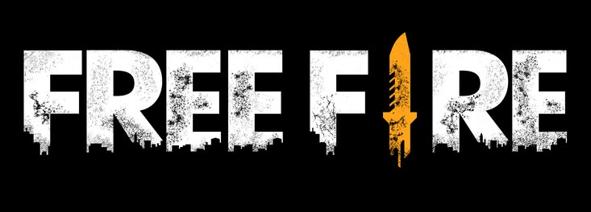
introdução ao free fire
Garena Free Fire é um jogo eletrônico de ação-aventura do gênero battle royale visto numa perspectiva em terceira pessoa.
Para começar a jogar, é necessário criar uma conta pessoal,
na qual você pode escolher se deseja criar uma conta própria do jogo ou se deseja conectar-se com alguma rede social,
como o Facebook. Após efetuar o login,
jogador deve configurar seu perfil e explorar o jogo afim de obter conhecimento sobre a jogabilidade
mapas
Bermuda
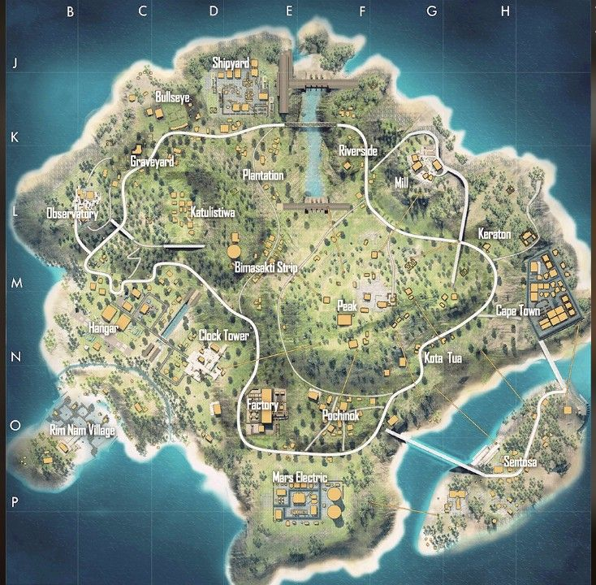
Bermuda é o mapa original de Free Fire, presente desde o lançamento oficial do jogo, em 30 de setembro de 2017.
Ambientado em uma ilha tropical, combina áreas urbanas,
zonas industriais, regiões costeiras e terrenos abertos.
Entre os locais nomeados estão Peak, Pochinok, Hangar,
Factory, Clock Tower e Ilha Sentosa.
Ao longo dos anos,
o mapa recebeu atualizações que modificaram aspectos estruturais e visuais de diferentes áreas.
Em 2020, foi lançada uma segunda versão, intitulada Bermuda Remasterizado, que ap
resentou alterações em relação ao cenário original.
A atualização manteve parte da estrutura inicial,
mas modificou áreas específicas.
A Ilha Sentosa foi substituída por uma nova área denominada Samurai’s Garden.
A versão também incluiu novos pontos de interesse, como Academy, Fisherman’s Creek, Hydrapower e Yagami Garden.
O mapa não é utilizado nas competições oficiais do jogo.
Purgatório
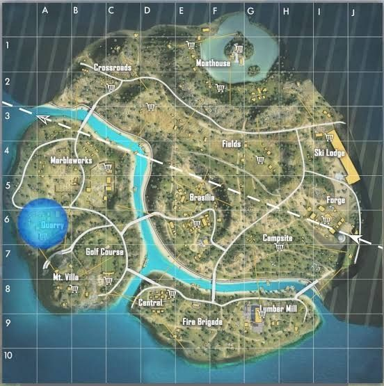
Introduzido em 2018, Purgatório foi o segundo mapa adicionado ao jogo. Apresenta maior variação topográfica em comparação com Bermuda, com elevações,
montanhas e um rio que divide o território. Entre seus locais nomeados estão Quarry, Moathouse, Crossroads e Brasília.
O mapa também inclui tirolesas que conectam regiões elevadas, ampliando as possibilidades de deslocamento.
Kalahari
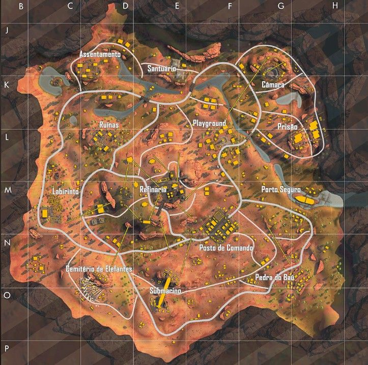
Kalahari foi lançado em fevereiro de 2020. Inspirado no deserto africano homônimo, apresenta ambientação árida,
com formações rochosas, áreas abertas e estruturas abandonadas. Possui menor extensão territorial em
comparação com mapas anteriores e, em determinados modos, comporta vinte jogadores por partida. Entre os locais nomeados estão Refinaria,
Posto de Comando, Cemitério de Elefantes e Submarino. O mapa substituiu
temporariamente Purgatório nas partidas ranqueadas, decisão posteriormente revertida, passando a integrar o sistema de rotação de mapas
Nova terra
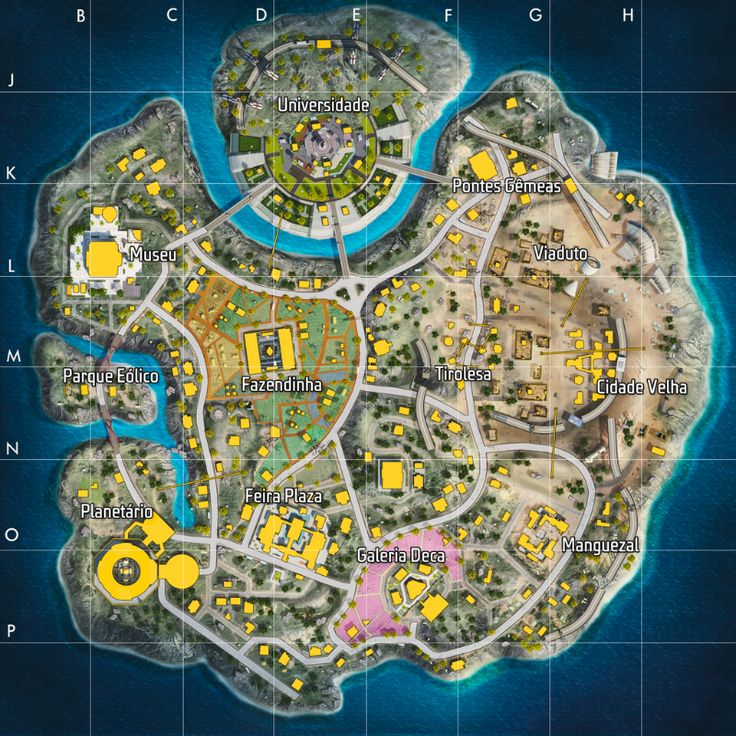
Nova Terra foi introduzido em 2022 e apresenta temática futurista. O mapa inclui mecânicas específicas,
como o Planetário, que possui zonas de antigravidade capazes de alterar temporariamente a movimentação dos jogadores.
Entre os locais nomeados estão Fazendinha, Museu, Universidade, Cidade Velha e Viaduto.
personagens
O Free Fire possui atualmente 65 personagens jogáveis (41 masculinos e 24 femininos),
cada um com habilidades especiais
ativas (que você precisa apertar para usar) ou passivas (que funcionam sozinhas durante a partida).
ignis

| Tipo de habilidade | ATIVA |
| Nome | Paredão de Fogo |
| Descrição | Posiciona uma cortina de chamas com 12 metros de largura e duração de 10 segundo s (distância máxima de posicionamento: 15 metros). Oponentes e paredes de gel que entrarem em contato com a cortina sofrem dano de combustão: recebem 30 de dano instantaneamente e, em cada segundo seguinte, 10 de dano, além de perder 20% de durabilidade de armadura. O efeito combustão tem duração de 2 segundos. Paredes de gel recebem 200 de dano instantaneamente e 200 de dano por 1 segundo. Tempo de recarga: 60 segundos. |
Suzy
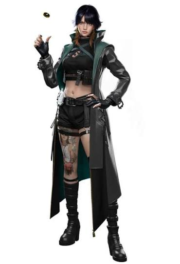
| Tipo de habilidade | PASSIVA |
| Nome | Abate é Dinheiro |
| Descrição | Suas marcações de oponentes têm valor de recompensa. Qualquer joga dor na equipe ganhará 200 em grana na partida por abater um oponente marcado, e você receberá 100 ex tras por abater um oponente. Receba 400 Fichas FF adicionais na Máquina de Ficha em partidas de BR.. |
Sônia

| Tipo de habilidade | PASSIVA |
| Nome | Nanoproteção |
| Descrição | Após receber dano letal, entra em um modo invulnerável e imóvel por 0.4 segundos. Em seguida, recebe um escudo com 1 PV e duração de 2 segundos. O usuário da habilidade será eliminado quando o escudo desaparecer. Tempo de recarga: 180 segundos. |
Orion
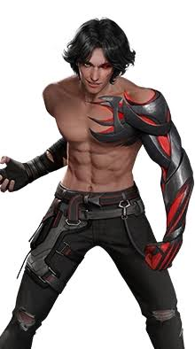
| Tipo de habilidade | ATIVA |
| Nome | Onda Escarlate |
| Descrição | Substitui PE por 300 de Energia Escarlate. Consome 200 de Energia Escarlate para ativar sua proteção, durante a qual você não recebe dano ou ataca oponentes. Ele absorve 10 PV (ignorando Pontos de Escudo do oponente) de adversários no alcance de 5 metros. A habilidade dura por 3 segundos, durante a qual sua velocidade de movimento é reduzida por 20%. Tempo de recarga: 3 segundos. |
Tatsuya
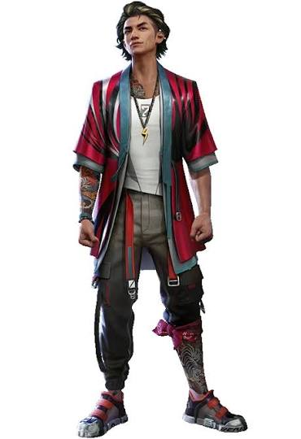
| Tipo de habilidade | ATIVA |
| Nome | Disparo Rebelde |
| Descrição | Dê uma arrancada para frente em rápida velocidade por 0.3 segundos. Esta habilidade pode ser acumulada para até 2 usos consecutivos. O uso consecutivo da habilidade terá tempo de recarga de 1 segundo entre usos. O tempo de recarga para a arrancada é de 60 segundos.. |
Íris
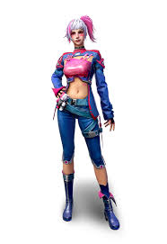
| Tipo de habilidade | ATIVA |
| Nome | RaStReAdOrAh |
| Descrição | Em até 15 segundos depois de ativar a habilidade, é possível disparar e acertar uma parede de Gel para marcar oponentes dentro de 7 metros dela e causar dano nestes oponentes (o dano causado é menor do que o normal). Afeta no máximo 5 paredes de gel. O tempo de recarga da habilidade é de 60 segundos. |
Homero
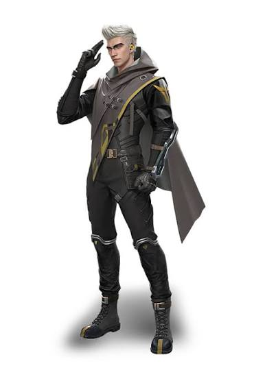
| Tipo de habilidade | ATIVA |
| Nome | Olho de Argos |
| Descrição | Solta um drone frontal dentro de 100 metros de distância frontal, criando uma explosão de 5 metros de diâmetro que reduz a velocidade de movimento em 40% e a velocidade de disparo em 40%. Causa 25 de dano. O tempo da habilidade dura 5 segundos, com 60 segundos para recarga. |
Kenta
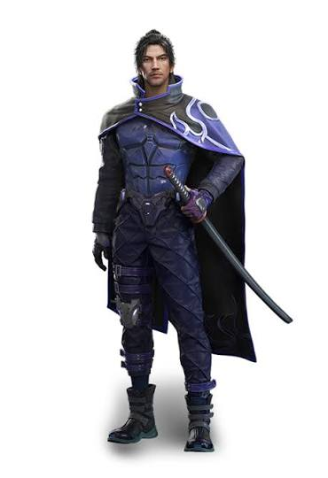
| Tipo de habilidade | ATIVA |
| Nome | Proteção do Samurai |
| Descrição | Cria um escudo frontal de 5 metros de largura que reduz o dano front al de armas em 60%. Ao disparar, a redução de dano é diminuída em 20%. O tempo da habilidade é de 5 segundos, e seu tempo de recarga é de 70 segundos. |
Nairi
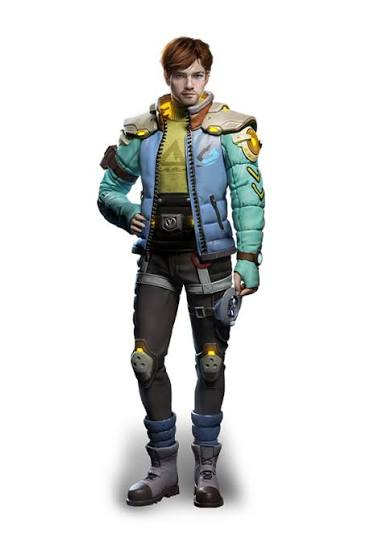
| Tipo de habilidade | PASSSIVA |
| Nome | Gel de Aço |
| Descrição | Dentro de 3 segundos depois de colocar Paredes de Gel, 160 de dura bilidade é restaurada por segundo e 10 de Vida é restaurada por segundo p ara aliados dentro de 5 metros. O efeito de cura não acumula ao colocar várias Paredes de Gel. |
Otho
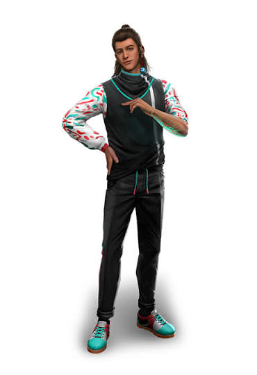
| Tipo de habilidade | PASSSIVA |
| Nome | Olhar de Calavera |
| Descrição | Após derrubar um oponente, marca oponentes dentro de 20 metros do oponente derrubado e diminui a velocidade de movimento em 25%. Dura 4 segundos. Ao ser derrubado por um oponente próximo, marca e diminui a velocidade do jogador que fez o ataque e seus aliados. |
D-Boas (D-Bee)
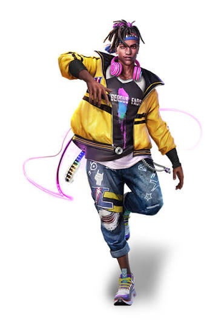
| Tipo de habilidade | PASSSIVA |
| Nome | Pé de Break |
| Descrição | A velocidade de movimento aumenta em 50% e a precisão aument a em 60% ao atirar em movimento. |
Chrono
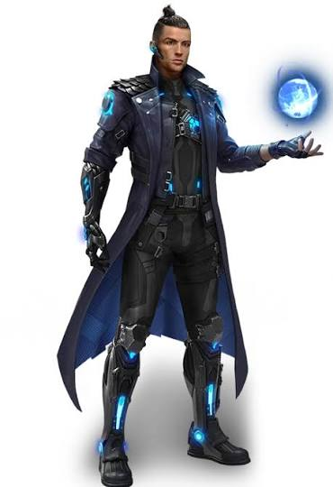
| Tipo de habilidade | ATIVA |
| Nome | Escudo Tunado |
| Descrição | Cria um campo de força que bloqueia o dano dos inimigos. É possível atirar nos inimigos de dentro do campo de força. Velocidade de movimento aumenta, e aliados dentro do campo de força recebem um bônus de velocidade durante o período de ativação da habili |
Alok
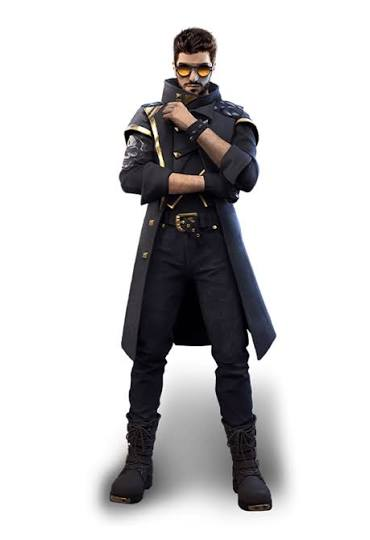
| Tipo de habilidade | ATIVA |
| Nome | Som na Caixa |
| Descrição | Cria uma aura que aumenta a velocidade e recupera HP dos aliados próximos. Efeito não acumulativo. |
A124
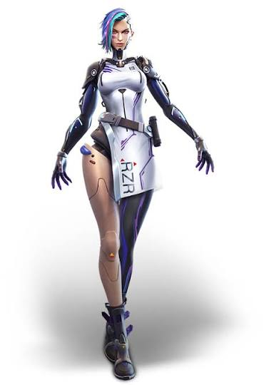
| Tipo de habilidade | ATIVA |
| Nome | Emoção da Batalha |
| Descrição | Libera uma onda eletromagnética com o diâmetro de 8 metros que impede a ativa ção das habilidades dos oponentes. Causa 25 de dano e interrompe o tempo de recarga da interação deles. Dura 20 segundos, tendo 75 segundos de tempo de recarga. |
Hayato:
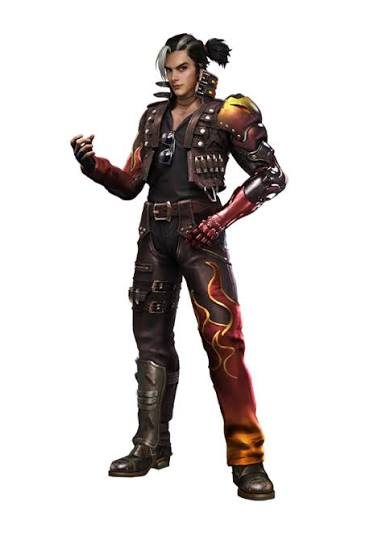
| Tipo de habilidade | PASSIVA |
| Nome | Bushido |
| Descrição | Ao perder 13% da vida máxima, a penetração de a rmadura aumenta em 5%. |
Moco
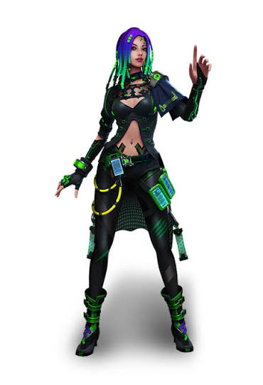
| Tipo de habilidade | PASSIVA |
| Nome | Olho Hacker |
| Descrição | Marca os oponentes atingidos por 5 segundos, revelando sua localização no mapa. A informação é compartilhada com seus integrantes de equipe. |
Wukong
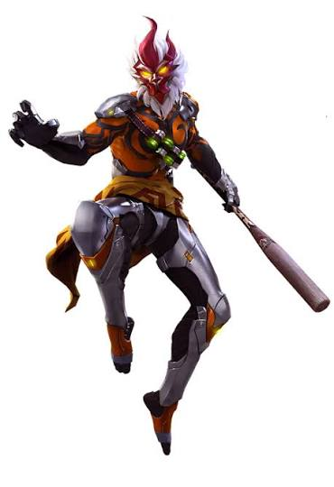
| Tipo de habilidade | ATIVA |
| Nome | Ilusão |
| Descrição | Transforma-se em um arbusto com duração de 15 segundos. A transformação acaba quando Wukong ataca. Tempo de recarga: 75 segundos (o tempo de recarga é zerado quando Wukong deita um oponente). |
Ford
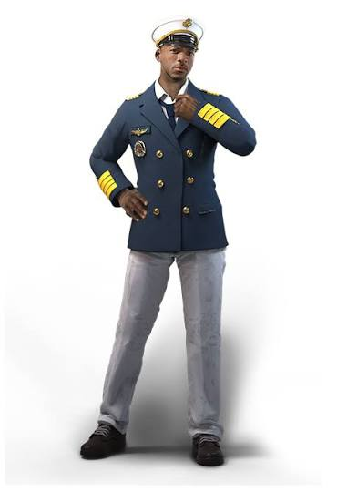
| Tipo de habilidade | PASSIVA |
| Nome | Vontade de Ferro |
| Descrição | Ao receber dano, recupera 10 de vida por 4 segundos. Esta habilidade passiva é reiniciada após o uso da habilidade ativa. Tempo de recarga: 20 segundos. |
Kla
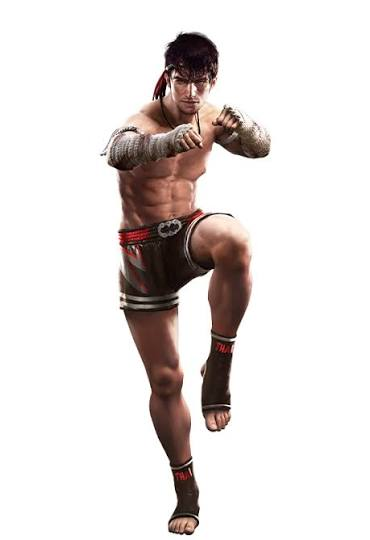
| Tipo de habilidade | PASSIVA |
| Nome | Muay Thai |
| Descrição | Aumenta o dano do punho em 400%. |
miguel
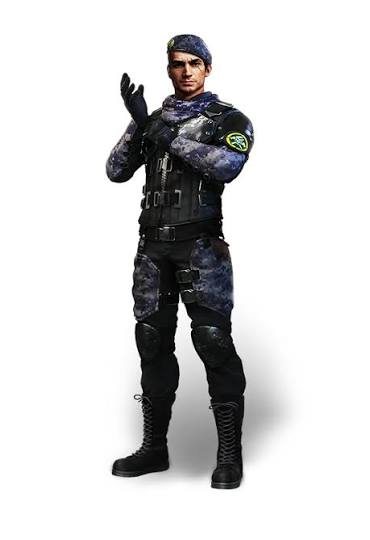
| Tipo de habilidade | PASSIVA |
| Nome | Energia da vila |
| Descrição | ganha EP por cada abate |
Caroline
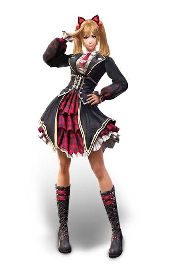
| Tipo de habilidade | PASSIVA |
| Nome | Extremamente Ágil |
| Descrição | Ao segurar uma espingarda, a velocidade de movimento aumenta em 16%. |
veículos
>Free Fire possui uma variedade de veículos que os jogadores podem utilizar para se locomover pelo mapa, escapar de situações perigosas ou até mesmo atacar adversários. Cada veículo tem suas próprias características, como velocidade, capacidade de passageiros e resistência a danos. Alguns dos veículos mais comuns incluem carros, motos, barcos e até mesmo veículos especiais que podem ser encontrados em eventos ou modos de jogo específicos.
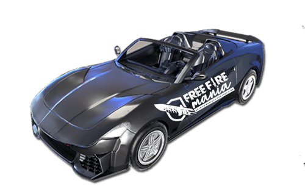
Carro Esportivo Carro esportivo e elegante. Baixa Armadura mas bastante veloz. Pode transportar até 2 jogadores.
HP
400
Curvas
20
velocidade
80
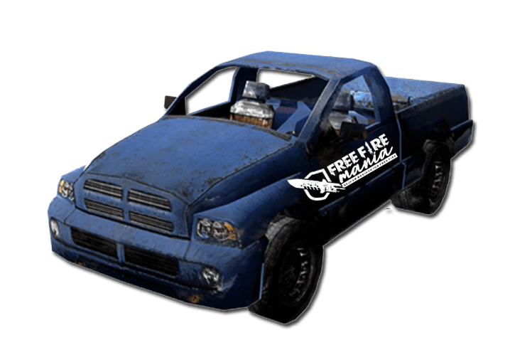
Veículo Padrão Veículo padrão do Free Fire. Armadura média e velocidade máxima. Pode transportar até 2 jogadores.
HP
400
Curvas
12
Velocidade
55
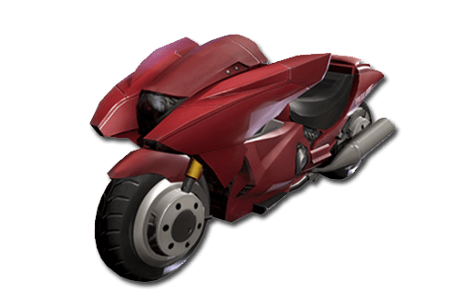
Moto Um veículo para um jogador. Possui baixa armadura, mas pode viajar rapidamente.
HP
300
Curvas
40
Velocidade
60
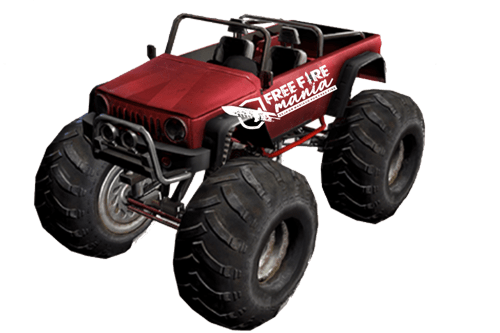
Caminhão Monstro Possui armadura alta e pode viajar por terrenos difíceis. Pode transportar até 4 jogadores.
HP
800
Curvas
15
Velocidade
45
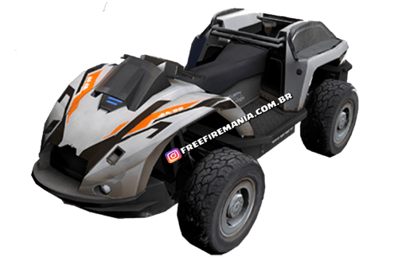
Carro Anfíbio Pode viajar tanto em terra quanto na água. Pode transportar até 2 jogadores.
HP
300
Curvas
15
Velocidade
40
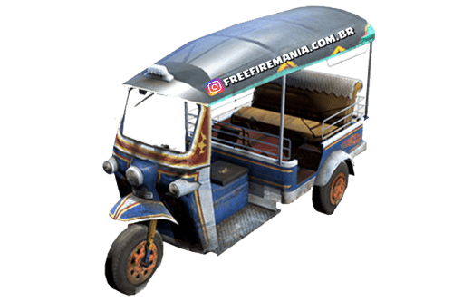
Tuk Tuk Possui baixa armadura e movimento lento. Pode transportar até 3 jogadores.
HP
300
Curvas
15
Velocidade
35
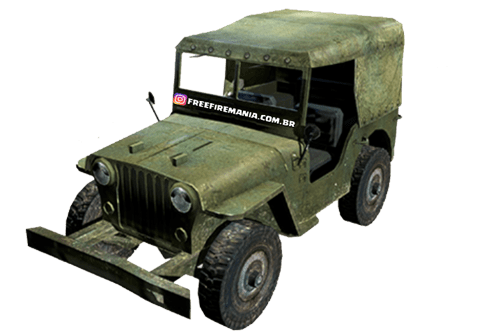
Jeep Possui armadura e velocidade média. Pode transportar até 4 jogadores.
HP
500
Curvas
15
Velocidade
40
modos
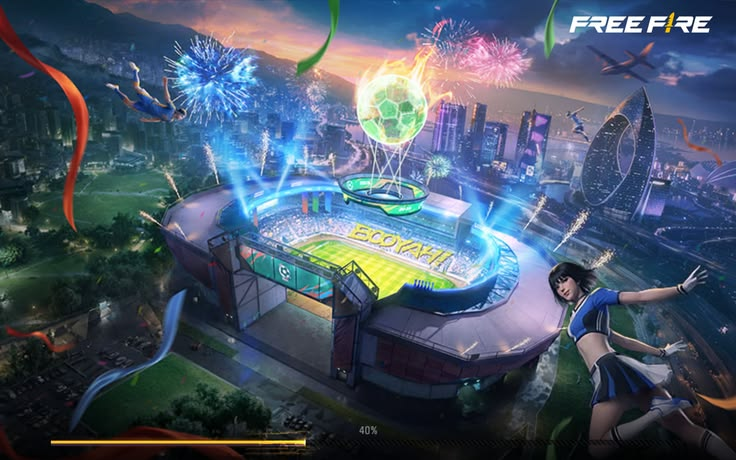
Battle Royale
Modo clássico em que até 50 jogadores entram em uma partida e precisam sobreviver até restar apenas um jogador ou equipe.
Jogadores: Até 50.
Objetivo: Sobrevivência.
Contra Squad
Duas equipes de quatro jogadores se enfrentam em várias rodadas. Vence a equipe que conquistar mais rodadas.
Jogadores: 4 contra 4.
Objetivo: Vencer 4 rodadas .
Gladiadores FF
Modo de combate em que os jogadores enfrentam adversários utilizando armas e estratégias de combate.
Objetivo: Derrotar adversários.
Modo Treinamento
Ambiente destinado à prática de mira, testes de armas, experimentação de equipamentos e aperfeiçoamento das habilidades.
Objetivo: Praticar habilidades.